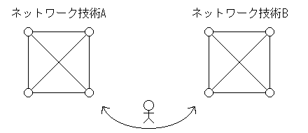

異なる目的で使用するネットワークには、異なるネットワーク技術を 用いることで、ネットワークの最適化を実現している。 ただ、この考え方には欠点がある。 今、異なるネットワーク技術(A)とネットワーク技術(B)があったとする。 ネットワーク(A)に接続された端末からは、(B)のネットワークを利用することができない。 なぜなら、異なるネットワーク技術は、互換性のないパケット形式(packet format)、 アドレス付け形式(addressing scheme)、ハードウェア等を用いているからである。
|
 ユーザが端末間を移動する必要がある ↓ ユニバーサルサービスの必要性 |
つまり、ユーザがネットワーク(A)のコンピュータを使用している時に、
ネットワーク(B)を使用したくなった時は、
ユーザ自身がネットワーク(B)の端末まで移動しなければならない。
この問題を解決し、どのネットワークに接続されたコンピュータからも
任意のネットワークを利用できるようにしたものが、ユニバーサルサービスの概念である。
その結果として、インターネットワーキング(internetworking)と呼ばれる方式が考案された。
これによって構成された物理ネットワークシステムをインターネットワーク(internetwork)という。
異種のネットワーク同士を接続するにはルータ(router)を使うことになる（ブリッジではない）。 ルータは各コネクション用に個別のインターフェイスを持つ、特化用途のコンピュータである。 ルータを用いて各LAN、WANを相互接続(interconnect)することによって、１つのインターネットワークを構成する。
１つのルータを用いて組織のネットワーク全てを接続することは稀である。なぜなら、
- １つのルータで接続した場合には、全てのトラフィックがそのルータに集中してしまい、負荷が大きい。
- 冗長性を持たせることによって、あるルータが故障したときに、別のルートを利用することが出来る。
からである。つまり、ある組織でネットワークを構築するときには、
ニーズやコストにあった構成をする
ことが重要である。
ルータは、送られてきたデータをフォワード(forward)するために、 異なるフレーム形式、アドレス付け方式のデータを処理するためのソフトウェアが必要である。 （→インターネットワーキングに最も広く使用されるProtocol suiteがTCP/IP Internet Protocolsであり、 現在のグローバルインターネットにも利用されている) つまり、ユニバーサルサービスを実現するためには、 コンピュータとルータ上にプロトコルソフトウェアが必要になる。
また、コンピュータは他のコンピュータと通信する際に、ルータの存在を意識する必要がない。 →仮想ネットワーク(virtual network)システム
OSI参照モデルとTCP/IP階層化モデルを比べてみる。
| OSI | TCP/IP |
|---|---|
| Application Layer | アプリケーション層(応用層) |
| Presentation Layer | |
| Session Layer | |
| Transport Layer | トランスポート層 |
| Network Layer | インターネットワーク層（ネットワーク層） |
| Data Link Layer | ネットワークインターフェイス層 |
| Physical Layer | 物理層 |
コンピュータシステムが、 大規模タイムシェアリングシステムから個人ワークステーションに移行するに従って、 セッション層の重要性が薄れてきた。
TCP/IPではインターネットに接続してアプリケーションを実行するコンピュータを ホストコンピュータ(host computer)と定義している。 ホストとルータにTCP/IPプロトコルソフトウェアが必要であるが、ルータ側でファイル転送ソフトを 実行することはないので、ルータには第５階層（アプリケーション層）は不要である。